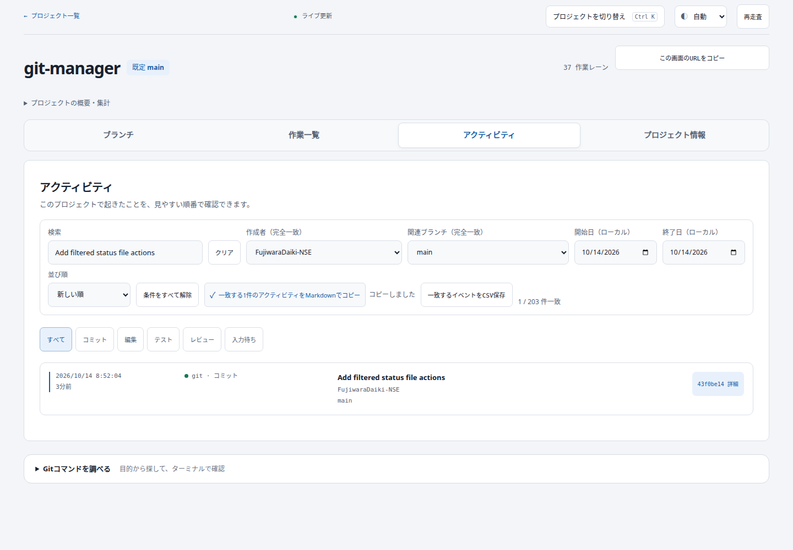
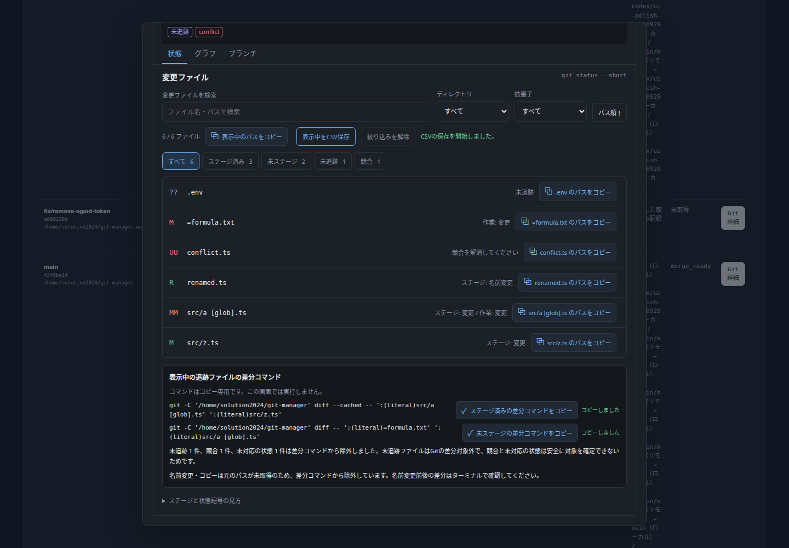

本日30点から開始し、機能追加14件（70点）と既存表示不具合1件（1点）で101点。指定された100点目標を達成。点数はユーザーの加点基準によるものです。
アクティビティの絞り込み、作業一覧の調査結果共有、変更ファイルの確認を拡充しました。未取得状態を保持し、差分コマンドはコピー専用です。元のパスが不明な名前変更・コピーはコマンド対象から除外します。
| Area | Feature and user value | Category | Points |
| Activity | Exact author filter narrows a person's or agent's records | Feature | 5 |
| Activity | Exact related branch filter includes records shared across lanes | Feature | 5 |
| Activity | Inclusive local-calendar start/end dates isolate a time window | Feature | 5 |
| Activity | Markdown copy of every matching record supports handoff | Feature | 5 |
| Activity | CSV download of every matching record supports spreadsheet analysis | Feature | 5 |
| Work lanes | Exact latest-commit author filter locates work by contributor | Feature | 5 |
| Work lanes | Upstream synchronization filter identifies synced, ahead, behind, diverged, untracked and unknown lanes | Feature | 5 |
| Work lanes | Matching lanes CSV retains upstream/default divergence and agent facts | Feature | 5 |
| Work lanes | Markdown summary includes paths, commits and synchronization for handoff | Feature | 5 |
| Changed files | Exact parent-directory filter includes an explicit root option | Feature | 5 |
| Changed files | Extension filter supports extensionless files and dotfiles | Feature | 5 |
| Changed files | Ascending/descending path order helps inspect a large change set | Feature | 5 |
| Changed files | Filtered status/path CSV supports review inventory | Feature | 5 |
| Changed files | Independently copy staged/unstaged read-only diff commands using literal pathspecs | Feature | 5 |
| Activity | Long lifecycle status labels no longer overlap the subject | Bug fix | 1 |
検証: frontend 158件・backend 164件成功、本番ビルド成功、P1修正済み。実ブラウザでコピー・CSV保存内容、日付境界、特殊パス、PC/モバイル、ライト/ダーク表示を確認。ブラウザ実行エラー0。
指定Composeで反映済み。Frontend稼働、Backend healthy、health ok=true。アプリを開く / 詳細記録


コミット: 43f0be1 と本レポートを含む後続統合コミット。既存の backend/uv.lock は変更・コミット対象外です。